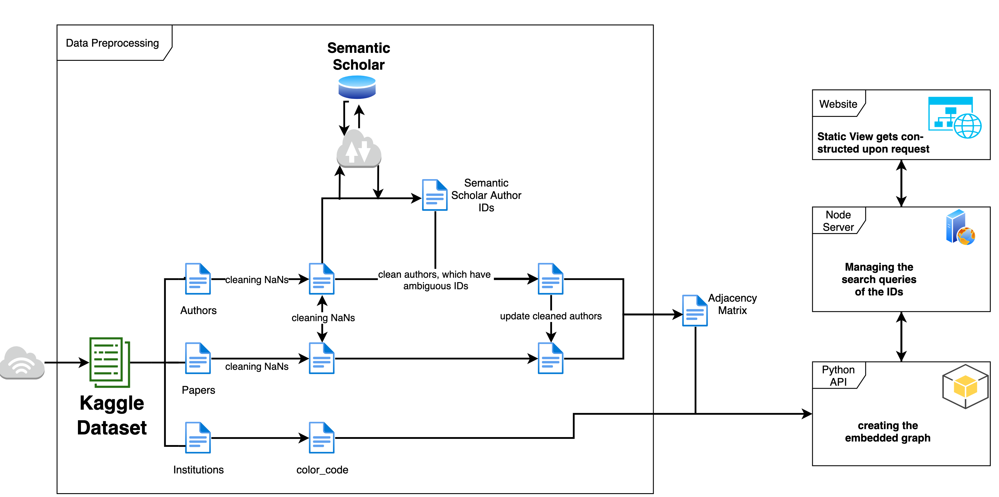
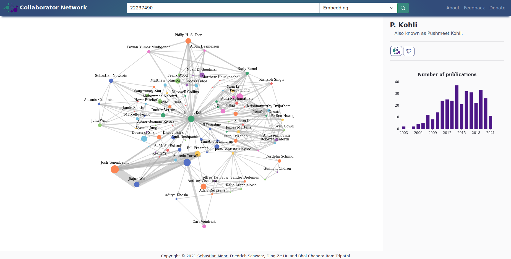

About Me
Graduated from the Master's degree of Appied Computer Science at the University of Göttingen, Germany. I learned extensively about technologies, such as Python and other programming languages, SQL and NoSQL databases, data processing and visualisation, cloud computing and web application. Trying my best the expand my knowlwdge and eager to join the industry.
- Birthday: 16 Oct 1995
- Website: https://dingzehu.github.io/
- Phone: +49 (0)152 23297438
- City: Göttingen, Germany
- Degree: MSc in Computer Science
- Email: hudingtza@gmail.com
Skills
Technical skills


Language skills
Qualification
Education
Master of Science in Computer Science
Georg-August-Universität Göttingen
10/2018 - 09/2022
Master's thesis: In-Memory Database Solution for near Real-Time data analysis (Master's thesis in GWDG)
Tools used: Remote Linux server, Python (Pandas, NumPy), InfluxDB, MongoDB, Redis, Jupyter Notebook
Bachelor of Science in Information and Telecommunications Engineering
Ming Chuan University, Taipei City (Taoyuan Campus), Taiwan
09/2014 - 06/2018
Bachelor thesis: Design and Implementation of Network Performance Testing Website
Tools used: PHP, HTML, Javascript, REST API, MySQL
My Works
Master's Thesis: In-Memory Database Solution for near Real-Time data analysis
Nowadays, the amount of data generated is around 2.5 quintillion bytes, and its trend is still growing. With the number of IoT (Internet of Things) services increasing, data will grow exponentially. Therefore, improving the efficiency of data processing and analysis is crucial. In this research, we choose the databases that can be used as the In-Memory Cache and develop dedicated data structures for them. The datasets stored in InfluxDB were copied and transformed into the data structures that fit the chosen database, Redis and MongoDB. For each data structure in each database, I benchmarked fetching, writing performance, and memory consumption.
Workflow: Query data from InfluxDB Transform the data into the designed data structures for Redis and MongDB Perform data writing and benchmark the performance and memory consumptionNetwork visualisation of authors' collaboration
In this project we created a network visualisation map for author collaboration on publications. First the Kaggle Dataset is transformed using Python into adjacency matrix using embedding which is a low-dimensional representation of high-dimensional data. All embedding techniques attempt to reduce the dimensions of data, but meanwhile to preserve the "key" information in the data. In our use case, we attempt to obtain coordinates which can be presented on a 2-dimension graph, via using embedding techniques through a high-dimension.
The following technologies are used to create the website: Front-End: CSS, HTML, Javscript (Echarts, Bootstrap) Middleware: NodeJS (Express, PythonShell) Back-End: Python (numpy, pandas, filecache, ...)
Workflow: Data pre-processing - get the proper data format Scrape author's ID from Semantic Scholar Transform processed data to adjacency matrix for further embedding, to get coordinates Plot embedded graph and statistic data  Analysis and Prediction of Sensor Data to build a Forecast Model Using AI Technology
To flight the climate change, a lot of science institute start to do research on weather data or climate data. In this project, we visualize and analyze data which are provided by the Sensor.Community project. A huge amount of sensors are set around Europe based on this project. We focus on visualizing and analyzing three measurements which are provided by these sensors, temperature, humidity and air pollution. We firstly to understand the data and to visualize them, including creating a dynamic interactive maps which show the change of measurement by time and also creating line charts of the measurements. For the part of analysing the data, we look at algorithms for outliers detection in order to find anomalous data in the observed dataset. Then we calculate the correlation coefficient of the dataset after dropping the anomalous data.
Workflow: Query data from InfluxDB Transform the data into the designed data structures for Redis and MongDB Perform data writing and benchmark the performance and memory consumption